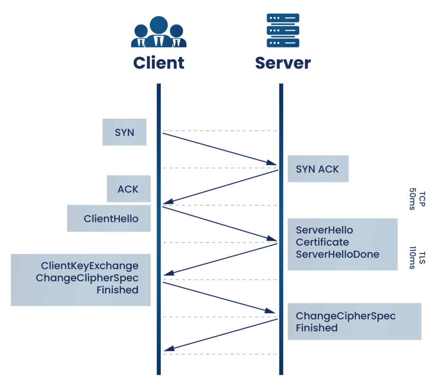
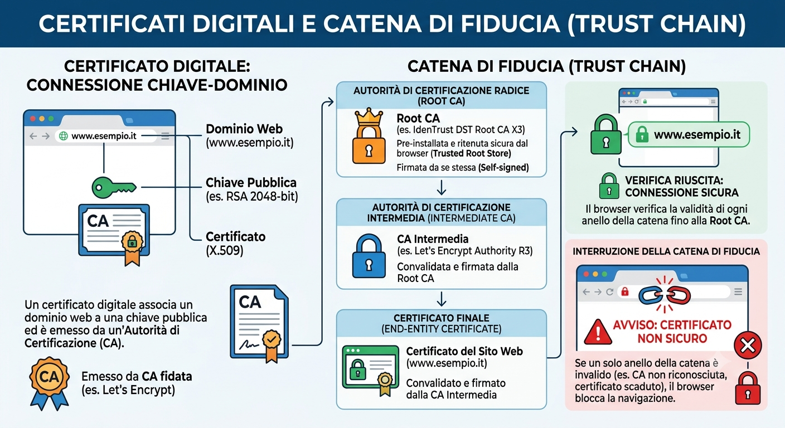
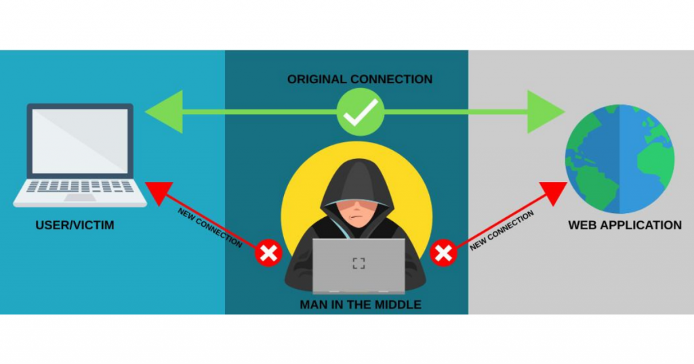

4.2 Sistemi e Reti
Sicurezza Online e Protocolli Crittografici
Sistemi e Reti è stata una materia fondamentale in questo quinto anno, un percorso che mi ha permesso di acquisire una profonda consapevolezza tecnica e metodologica. Ciò che mi ha maggiormente appassionato è stato lo studio dell'architettura e del funzionamento delle reti, grazie al quale ho potuto comprendere nel dettaglio i meccanismi e i protocolli che governano il viaggio dei dati nel mondo, trasformando l'uso quotidiano di Internet in un ambito di studio incredibilmente affascinante.
In questo contesto, l'argomento che mi ha maggiormente colpito è la sicurezza informatica, con particolare riferimento al protocollo SSL/TLS. La sicurezza nelle comunicazioni online è fondamentale per protectggere dati sensibili come password e carte di credito da intercettazioni e attacchi informatici. Per garantire la riservatezza e l'integrità delle informazioni tra client e server, sono stati sviluppati i protocolli crittografici SSL e TLS. Oggi, TLS rappresenta lo standard moderno e sicuro, mentre il vecchio SSL è considerato obsoleto e non viene più utilizzato dai browser.
Da SSL a TLS: L'Evoluzione dello Standard
SSL (Secure Sockets Layer)
Sviluppato da Netscape negli anni '90 (con le versioni pubbliche 2.0 e 3.0), è stato il pioniere della sicurezza sul web. Tuttavia, a causa di gravi vulnerabilità storiche (come gli attacchi POODLE e BEAST), è stato progressivamente abbandonato.
TLS (Transport Layer Security)
Rappresenta l'evoluzione diretta di SSL, standardizzato dalla Internet Engineering Task Force (IETF). Le versioni moderne like TLS 1.2 e TLS 1.3 eliminano i cifrari obsoleti e offrono connessioni molto più veloci e resistenti agli attacchi informatici.
Come Funziona l'Handshake TLS
Prima di scambiare qualsiasi dato, il client (browser) e il server stabiliscono una connessione sicura attraverso un processo chiamato TLS Handshake:
Client Hello & Server Hello: Le due parti concordano la versione del protocollo e gli algoritmi da usare.
Certificato Digitale: Il server invia la sua identità digitale per dimostrare l'autenticità.
Scambio delle Chiavi: Client e server generano una chiave segreta condivisa.
Connessione Sicura: La comunicazione viene completamente cifrata con la chiave simmetrica.

Certificati Digitali e Catena di Fiducia (Trust Chain)
Un certificato digitale associa un dominio web a una chiave pubblica ed è emesso da enti terzi fidati chiamati Autorità di Certificazione (CA), come Let's Encrypt.
La sicurezza del sistema si basa sulla Catena di Fiducia (Trust Chain): il certificato del sito è firmato da una CA intermedia, a sua volta convalidata da una CA radice (Root CA) pre-installata e ritenuta sicura dal browser. Se un solo anello della catena è invalido, il browser blocca la navigazione mostrando un avviso visibile di errore.

Applicazioni Pratiche e Attacchi Comuni
Il protocollo TLS protegge le nostre attività quotidiane attraverso l'uso di **HTTPS** nei browser, la crittografia delle **Email** e la creazione di tunnel sicuri nelle **VPN**. Nonostante la sua robustezza, una configurazione errata o l'uso di sistemi obsoleti può esporre il sistema ad attacchi come:
Man-in-the-Middle (MITM): Un malintenzionato si interpone silente tra client e server per intercettare o modificare i dati in transito.
Downgrade Attack: L'attaccante forza i dispositivi a comunicare usando vecchie versioni vulnerabili (es. SSL 3.0) per eludere le difese.

Argomenti principali del programma
- Livello Trasporto
- Livello Applicazione ed i suoi protocolli
- VLAN (Virtual Local Area Network)
- Crittografia per la protezione dei dati
- Cablaggio Strutturato
- Wireless, reti mobili e reti cellulari